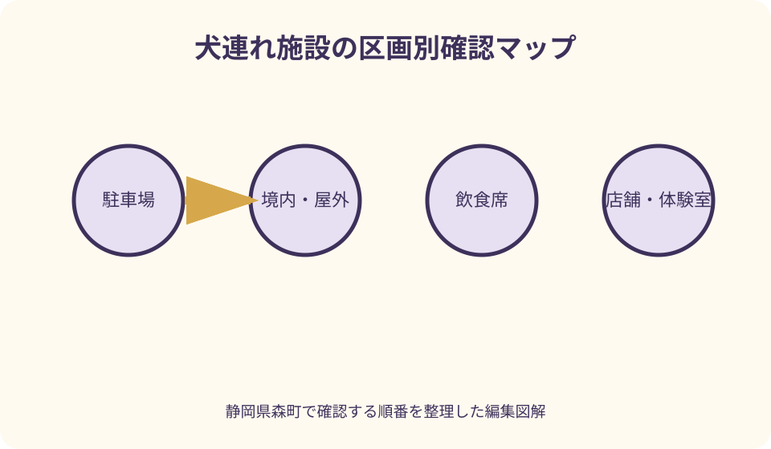
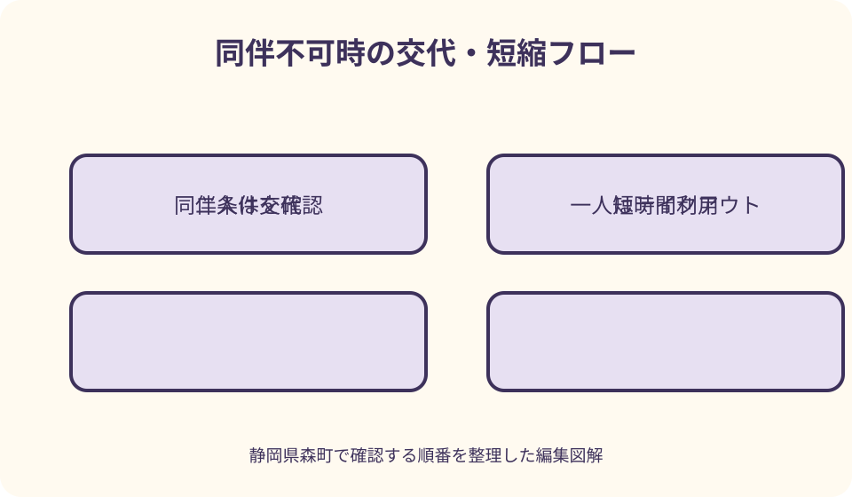

犬連れ・ペット同伴観光｜最終確認 2026-08-10
静岡県森町を犬連れで観光する｜神社・横丁・アクティ森の確認法
静岡県森町には小國神社、ことまち横丁、アクティ森、吉川キャンプ場、町なかの公園や散策路があります。しかし、屋外に入れたから店舗内も犬同伴可、神社の駐車場に着けたから参道・社殿周辺も同じ条件、キャンプ予約ができたから犬も宿泊可、とは限りません。公式サイトでペット規則が見つからない場所は、犬種や大きさ、頭数、区画、混雑日を伝えて事前に問い合わせます。入れない場合に車へ残すのではなく、二人以上なら交代、一人なら立寄りを外す計画を先に作ります。

編集イラスト『森町は犬連れOK』と一括しない
森町公式の観光ページは、寺社、花、自然、体験、宿泊等を一覧にしますが、一覧掲載はペット同伴を認める表示ではありません。個別運営者へ進みます。
同じ敷地でも、駐車場、屋外通路、境内、建物、売店、飲食席、体験室で規則が違う場合があります。施設名一つに可否を付けません。
補助犬に関する扱いと、ペットとしての犬の扱いは別です。『犬可』という断片だけを見ず、自分の利用区分に合う説明を確認します。
過去の口コミや写真で犬が写っていても、当日の規則、行事、衛生条件、指定管理者が同じとは限りません。公式ページと直接確認を優先します。
問い合わせる際は、訪問日、犬種・体格、頭数、利用したい区画、カート等の有無を伝えます。『犬は大丈夫ですか』だけでは条件を聞き漏らします。
一日を犬優先の二か所に絞る
犬連れの日は、小國神社方面とアクティ森方面を同日に詰め込まず、休憩できる一方面と、確実に同伴条件を確認した一施設に絞ります。
移動時間だけでなく、排泄、給水、落着く時間、駐車場から入口までの路面、同伴できない区画での交代時間を加えます。
候補をA・B・中止の三つにします。Aは同伴条件を確認済み、Bは屋外だけで完結する確認済み代案、中止は暑さ・混雑・規則変更時です。
人が行きたい店を並べて犬の待ち時間を作るのではなく、犬と一緒に滞在できる区画を基準に、人の食事・買物をテイクアウトや交代へ調整します。
当日になって同伴不可と分かったら、近隣の木陰や川原を自由な待機場所にしません。管理者が認めた場所がなければ、その立寄りを外します。
小國神社は境内区画を直接確認
小國神社公式は社殿、参道、休憩所、自然散策路等を紹介していますが、閲覧した施設案内だけではペット同伴の包括条件を確認できませんでした。社務所へ尋ねます。
駐車場、鳥居から先、手水舎、社殿前、休憩所、宮川沿い散策路について、犬が歩けるか、抱っこ・カート等の条件があるかを分けて聞きます。
祭典、初詣、紅葉など混雑日には、平常時と誘導や進入範囲が変わり得ます。過去に入れた経験を当日の許可として使いません。
参拝者には犬が苦手な人、アレルギーのある人、幼い子どももいます。短いリードで動線を管理し、社殿前や撮影地点を長く占有しません。
境内の川沿いが散策できても、犬を水へ入れてよいという意味ではありません。神域、自然保全、護岸、増水の条件を管理者へ確認します。

ことまち横丁は店舗・席ごとに聞く
ことまち横丁公式には複数の飲食・物販店と休憩所が掲載されています。横丁の屋外通路に犬と入れる場合でも、各店舗内の同伴可否は別です。
テラス、店外ベンチ、共用休憩所、列の並び場所について、犬同伴できるかを運営者へ確認します。屋外席という見た目だけで可と判断しません。
食品を扱う列では、犬の鼻先やリードが商品・他客へ届かない距離を取ります。混雑して管理できなければ一人だけ買いに行きます。
テイクアウト商品を犬へ与えてよいとは限りません。人用食品を犬の食事代わりにせず、犬の水と普段の食べ物を別に準備します。
二人なら、犬と屋外で待つ人と買物する人を交代できます。一人で来て入店できない場合は、車内待機へ替えず購入を見送ります。
アクティ森は体験・販売・屋外を分ける
アクティ森は創作体験、飲食、物販、屋外体験、MTBパーク等を持つ複合施設です。敷地へ犬と到着できることと、各施設へ入れることを同一にしません。
公式の町案内とリニューアル情報からは、犬同伴に関する全区画共通規則を確認できなかったため、運営者へ屋外通路、店内、食事席、体験室を個別に尋ねます。
MTBパークや子どもの体験区域では、自転車・利用者の動線があります。犬が驚く、リードが交差する可能性があるため、観覧区画の指示に従います。
特産物販売所や飲食施設に犬が入れない場合は、交代利用か立寄り短縮を選びます。入口へつないで全員が店内へ入る方法は採りません。
イベント日は音、来場者、車、屋台の匂いが増えます。通常日の可否だけで決めず、開催内容と犬連れの待機可能場所を当日確認します。
吉川キャンプ場は予約前に犬の条件を聞く
吉川キャンプ場カワセミの里の運営サイトは、バンガロー、テント、炊事棟、シャワー等を案内していますが、公開ページだけで犬同伴条件を確定しません。
予約前に、犬同伴可否、頭数・体格、サイトやバンガローの区分、追加料金、提出物、ケージ、リード、就寝、鳴き声への条件を聞きます。
キャンプ場が受入可能でも、共用炊事場、シャワー、建物、寝具、川辺などは別条件かもしれません。犬が入れる範囲を地図で確認します。
食材、ごみ、犬の食事は運営者指定の方法で管理します。熊等の野生動物情報も確認し、匂いのある物をサイト外へ放置しません。
規則が確認できない、犬が環境変化で落着けない、他利用者へ影響する懸念がある場合は、日帰り町歩きへ変更します。予約済みを実施理由にしません。

公園・町民の森は現況を先に見る
森町公式は町内公園の所在地、駐車場、日陰、遊具等を一覧にしています。この一覧も犬の利用可否やドッグランを示すものではありません。
公園ごとに管理者へ、犬の立入、リード、排泄、芝生・遊具周辺、駐車場の条件を確認します。子どもの遊び場を犬の運動場所として占有しません。
町民の森については、町の回覧資料にふんの後片付けとリード装着のお願いがありますが、別の町公式ページで施設全体の利用規制が告知されています。
利用規制がある間は、犬の散歩規則が書かれていることを入場許可に使いません。再開範囲を町が明示するまで代案からも外します。
日陰なし・駐車場なしと記載された公園もあります。現地へ着いてから犬を車に残すのではなく、条件が合わない公園は最初から選びません。
境内・飲食・屋内で守る距離
リードは装着するだけでなく、他の利用者、商品、自転車、車へ届かない長さで管理します。伸縮リードを通路いっぱいに伸ばしません。
抱っこやカートを条件にする施設では、犬の全身が収まる必要があるか、蓋が必要か等を確認します。自分のカートなら自動的に許可とは限りません。
入口、参道、注文列、写真撮影場所は人が止まりやすい区画です。犬と待つ人は動線の外へ移り、通行を妨げないようにします。
屋内不可の場所で、犬を入口の柱や柵へつないで離れません。盗難、逸走、接触、天候変化へ対応できないため、常に同行者が管理します。
吠え続ける、他の犬や人へ強く反応する場合は、周囲が我慢するまで滞在しません。落着ける確認済みの場所へ移るか、その施設を退出します。
排泄・ごみ・水を自分で完結させる
森町の町民の森利用案内にあるように、犬のふんは飼い主が後片付けします。他の場所でも、袋と密閉できる持帰り容器を用意します。
尿の扱いは施設ごとに指定があり得ます。水を掛ければどこでもよいと決めず、境内、店舗前、植栽、遊具付近では管理者の指示を聞きます。
犬の飲水容器は共用の手水、給水器、飲食店の食器と分けます。人用設備から直接飲ませてよいかを推測しません。
使用済み袋、ペットシーツ、食べ残しを施設の一般ごみ箱へ入れてよいとは限りません。持帰りを基本に、指定があれば従います。
排泄場所を探して立入禁止の草地、農地、川岸へ入りません。済ませられる場所がない施設は、滞在を短くするか訪問先から外します。
川辺は同伴可否と水況を別に確認
宮川、吉川、太田川周辺では、犬と歩ける場所か、犬を水へ入れてよいか、釣り・キャンプ利用と区画が分かれるかを管理者へ確認します。
川へ入れる許可があっても、その日の水位、流れ、上流雨、放流、工事とは別です。森町防災と県河川情報を見て、増水時は近づきません。
リードを付けたまま水へ入ることにも絡まり等の問題があり、外すことにも逸走の問題があります。自己流で決めず、施設の指定区域と規則に従います。
釣り人、子ども、水生生物、野鳥がいる場所で犬を追わせません。自然観察の場所は、犬の自由運動場ではありません。
雨後、濁り、流木、滑る護岸、閉鎖表示があれば、写真を撮るためだけに岸へ下りません。川のない町なかの短い散策へ変更します。
暑さ・雨・車内待機を計画から外す
森町の夏は、町なかの舗装、駐車場、山間部で体感条件が異なります。気温予報だけでなく、日陰、地面、風、休める区画を確認します。
クーリングシェルターは人向け施設であり、犬同伴可能とは限りません。暑くなったらそこへ入れるという代案を無確認で置きません。
犬を車へ残して参拝・飲食・買物する案は、短時間でも採りません。エアコンを動かす計画も、故障や停止を含め待機場所の代わりにしません。
雨天は屋内へ切り替えたくなりますが、犬が入れる室内が確認できない場合があります。雨具で無理に回らず、訪問日を変更します。
犬の体調や暑さへの個別判断は、旅行記事で診断しません。持病、年齢、移動可否に不安があれば、出発前に普段診てもらう獣医師へ相談します。
野生動物と災害情報も重ねる
山側やキャンプ場へ向かう前に、森町の熊・有害鳥獣情報を確認します。犬がいることを野生動物への防御や安全確認の手段にしません。
藪、林道、川岸へ犬を先行させず、リードを外して追わせません。直近情報や施設閉鎖があれば町なかへ変更します。
大雨、雷、道路規制、河川情報が出た場合は、犬連れの予定を続ける理由を探さず、森町公式の防災案内を優先します。
森町地域防災計画は、同行避難が避難所内で人とペットが同居する意味ではないと説明しています。旅行中の避難でも受入条件を一括推測しません。
迷子札、連絡先、ケージ、犬用の備蓄、紙の施設連絡先を準備します。ただし避難所へ向かうかは、災害時の町の開設・受入案内に従います。
入れない時は交代・短縮・中止
二人以上なら、一人が犬と確認済みの屋外場所で待ち、もう一人が短時間だけ参拝・買物し、役割を交代できます。待機場所の許可も先に取ります。
一人旅で屋内不可なら、テイクアウト、外から見られる範囲、同伴可能を確認した別施設へ替えます。入口係留や車内待機は代案にしません。
混雑で犬を管理できない場合は、早朝へずらせば必ず空くと決めず、施設が案内する時間と行事を確認して別日にします。
キャンプの犬条件が合わなければ、犬だけを預ける手配を当日に探すのではなく、宿泊をやめ、短い日帰りへ変更します。
同行不可を残念な例外ではなく、最初から起こり得る分岐として旅程に入れます。そうすれば現場で係員へ例外対応を求めずに済みます。
良い点
小國神社、ことまち横丁、アクティ森、吉川キャンプ場がそれぞれ公式サイトや問い合わせ先を持ち、施設・区画ごとの確認先をたどれます。
森町公式の公園一覧は、住所、駐車場、日陰、遊具等を比較できるため、犬同伴可否を別途確認する候補を絞る入口になります。
町民の森の案内でふんの後片付けとリードを明記している点は、犬連れ利用者に求める最低限の行動を具体的に伝えています。
森町の防災計画が同行避難と避難所での同居を区別しているため、犬連れ旅行者も災害時の受入を楽観せず準備できます。
注文したい点
観光公式サイトに、ペット同伴について最終更新日、屋外・屋内・飲食・宿泊区画、犬種・頭数、カート条件を施設別に統一表示してほしいところです。
小國神社とことまち横丁は隣接するため、神社境内と各店舗の規則が切り替わる地点を一枚のマップに示すと誤解を減らせます。
アクティ森では、体験室、販売所、飲食、MTB観覧、屋外通路の犬同伴条件と、イベント日の変更をFAQで確認できると実用的です。
吉川キャンプ場は予約前に確認すべき犬の条件を利用案内へ明記し、バンガローとテント、共用設備、川辺を分けてほしいところです。
公園一覧から、犬の立入、リード、排泄物、日陰、閉鎖情報へ直接進めれば、駐車場到着後に利用できないと判明する事態を避けられます。
代案・結論
結論は、森町全体ではなく、小國神社、横丁各店、アクティ森各区画、キャンプ場、公園ごとに最新の犬同伴条件を確認することです。
確認項目は、歩行・抱っこ・カート、屋内・飲食、頭数、リード、排泄、待機、混雑日です。返答が曖昧なら同伴可へ解釈しません。
二人なら交代、一人ならテイクアウトか立寄り中止、暑さ・雨・災害時は日程変更を選びます。車内へ残す方法は使いません。
町民の森は犬の利用マナーが示されていても、施設利用規制の解除確認が先です。利用可能な公園も管理者へ犬の条件を聞いてから向かいます。
大石の視点
私は『犬歓迎』というまとめ記事より、施設へ何を質問し、入れなければどう帰るかを書いた計画のほうを信用します。可否は運営者が決めるものです。
犬連れ観光で大切なのは、犬と一緒に写真へ収まる場所の数ではなく、犬を待たせず、他の利用者にも例外を求めずに過ごせる時間です。
森町は神域、飲食、体験、川、山が近接しています。その近さの中で規則が切り替わるため、敷地の境目ごとに立止まって確認します。
入れない場所を車内待機で埋めると、人の希望が犬の負担より上になります。交代できなければ外すという単純なルールが旅を整えます。
一方面、一施設、短い滞在でも、犬が落着き、地域の人の動線を守れれば十分です。次の場所は、条件を確認した別日に残します。
公式情報・確認先
掲載内容は次の一次情報を基礎に整理しました。営業、料金、催し、交通は変わるため、出発前または手続き前にリンク先で最新情報を確認してください。
- 観光（静岡県森町、2026-08-10確認）
- おでかけ・森町内の公園及び施設などの一覧（静岡県森町、2026-08-10確認）
- 町民の森 施設の利用規制について（静岡県森町、2026-08-10確認）
- 森町体験の里アクティ森リニューアルオープンについて（静岡県森町、2026-08-10確認）
- 森町地域防災計画（静岡県森町、2026-08-10確認）
- 境内・施設（小國神社、2026-08-10確認）
- 小國ことまち横丁（ことまち横丁、2026-08-10確認）
- 吉川キャンプ場 カワセミの里（コテージ・アクティ／吉川キャンプ場、2026-08-10確認）
- 静岡県のツキノワグマ（静岡県、2026-08-10確認）